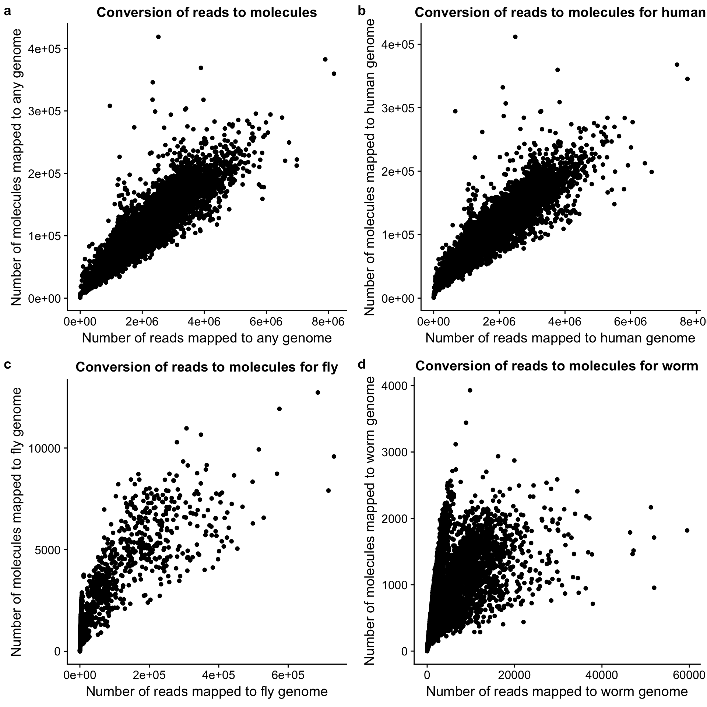

Analysis of totals counts
John Blischak
2017-08-14
Last updated: 2017-08-14
Code version: e4d4030
This analysis explores the total counts of reads and molecules mapped to each source (human, fly, worm, and ERCC).
Setup
library("cowplot")
library("dplyr")
library("ggplot2")
library("readr")
library("stringr")
library("tidyr")
theme_set(theme_cowplot())
source("../code/functions.R")Import totals counts.
totals <- read_tsv("../data/totals.txt")
dim(totals)[1] 1247 18totals[1:5, 1:10]# A tibble: 5 × 10
sample experiment well id lane raw umi
<chr> <chr> <chr> <chr> <chr> <int> <int>
1 03172017-D08_S428_L004_R1_001 03172017 D08 S428 L004 195934 128384
2 03312017-B03_S975_L007_R1_001 03312017 B03 S975 L007 454791 234840
3 03232017-F05_S641_L005_R1_001 03232017 F05 S641 L005 923445 519375
4 04072017-E08_S536_L008_R1_001 04072017 E08 S536 L008 589561 311766
5 03172017-D12_S432_L008_R1_001 03172017 D12 S432 L008 566193 361756
# ... with 3 more variables: mapped <int>, unmapped <int>, reads_ce <int>colnames(totals) [1] "sample" "experiment" "well" "id" "lane"
[6] "raw" "umi" "mapped" "unmapped" "reads_ce"
[11] "reads_dm" "reads_ercc" "reads_hs" "molecules" "mol_ce"
[16] "mol_dm" "mol_ercc" "mol_hs" Import annotation.
anno <- read_tsv("../data/batch1_qc.txt",
col_types = cols(ERCC = col_character()))
# Cleanup ERCC column
anno$ERCC <- ifelse(is.na(anno$ERCC), "Not added", anno$ERCC)
anno$ERCC <- factor(anno$ERCC, levels = c("Not added", "1:100000", "1:50000"),
labels = c("Not added", "100x dilution", "50x dilution"))
dim(anno)[1] 960 13colnames(anno) [1] "experiment" "well" "cell_number" "concentration"
[5] "tra1.60" "individual.1" "individual.2" "individual.3"
[9] "individual.4" "fly" "worm" "ERCC"
[13] "index" Merge the data sets.
totals_anno <- merge(totals, anno, by = c("experiment", "well"))
stopifnot(nrow(totals_anno) == nrow(totals))Remove samples with bad cell number or TRA-1-60.
totals_anno <- totals_anno %>%
filter(cell_number == 1, tra1.60 == 1)
dim(totals_anno)[1] 1129 29What percentage of reads are mapped to the genome?
totals_long <- totals %>%
gather(key = "type", value = "count", raw:mol_hs) %>%
filter(type %in% c("raw", "umi", "mapped", "molecules")) %>%
mutate(type = factor(type, levels = c("raw", "umi", "mapped", "molecules"),
labels = c("Raw reads", "Reads with UMI",
"Reads mapped\nto genome",
"Molecules mapped\nto genome")))
head(totals_long)# A tibble: 6 × 7
sample experiment well id lane type
<chr> <chr> <chr> <chr> <chr> <fctr>
1 03172017-D08_S428_L004_R1_001 03172017 D08 S428 L004 Raw reads
2 03312017-B03_S975_L007_R1_001 03312017 B03 S975 L007 Raw reads
3 03232017-F05_S641_L005_R1_001 03232017 F05 S641 L005 Raw reads
4 04072017-E08_S536_L008_R1_001 04072017 E08 S536 L008 Raw reads
5 03172017-D12_S432_L008_R1_001 03172017 D12 S432 L008 Raw reads
6 04202017-A06_S1062_L007_R1_001 04202017 A06 S1062 L007 Raw reads
# ... with 1 more variables: count <int>ggplot(totals_long, aes(x = type, y = count)) +
geom_boxplot() +
labs(x = "Classification", y = "Number of sequences",
title = "Processing of raw reads")
| Category | mean | sd | % of raw (mean) |
|---|---|---|---|
| Raw reads | 5.274081210^{5} | 2.976690210^{5} | 1.00 |
| Reads with UMI | 3.211071610^{5} | 1.826817210^{5} | 0.61 |
| Reads mapped to genome | 2.525623310^{5} | 1.446057110^{5} | 0.48 |
| Molecules mapped to genome | 3.393012310^{4} | 1.763866710^{4} | 0.07 |
What is the conversion of reads to molecules?
convert_all <- ggplot(totals, aes(x = mapped, y = molecules)) +
geom_point() +
labs(x = "Number of reads mapped to any genome",
y = "Number of molecules mapped to any genome",
title = "Conversion of reads to molecules")
convert_hs <- ggplot(totals, aes(x = reads_hs, y = mol_hs)) +
geom_point() +
labs(x = "Number of reads mapped to human genome",
y = "Number of molecules mapped to human genome",
title = "Conversion of reads to molecules for human")
convert_dm <- ggplot(totals, aes(x = reads_dm, y = mol_dm)) +
geom_point() +
labs(x = "Number of reads mapped to fly genome",
y = "Number of molecules mapped to fly genome",
title = "Conversion of reads to molecules for fly")
convert_ce <- ggplot(totals, aes(x = reads_ce, y = mol_ce)) +
geom_point() +
labs(x = "Number of reads mapped to worm genome",
y = "Number of molecules mapped to worm genome",
title = "Conversion of reads to molecules for worm")
plot_grid(convert_all, convert_hs, convert_dm, convert_ce,
labels = letters[1:4])
Drosophila spike-in
p_reads_dm <- ggplot(totals_anno, aes(x = as.factor(fly), y = reads_dm / mapped * 100)) +
geom_boxplot() +
labs(x = "Fly spike-in concentration",
y = "Percentage of mapped reads that mapped to fly genome")
p_mol_dm <- ggplot(totals_anno, aes(x = as.factor(fly), y = mol_dm / molecules * 100)) +
geom_boxplot() +
labs(x = "Fly spike-in concentration",
y = "Percentage of mapped molecules that mapped to fly genome")
plot_grid(p_reads_dm, p_mol_dm, labels = letters[1:2])
p_reads_dm_counts <- ggplot(totals_anno, aes(x = as.factor(fly), y = reads_dm)) +
geom_boxplot() +
labs(x = "Fly spike-in concentration",
y = "Number of reads that mapped to fly genome")
p_mol_dm_counts <- ggplot(totals_anno, aes(x = as.factor(fly), y = mol_dm)) +
geom_boxplot() +
labs(x = "Fly spike-in concentration",
y = "Number of molecules that mapped to fly genome")
plot_grid(p_reads_dm_counts, p_mol_dm_counts, labels = letters[1:2])
C. elegans spike-in
p_reads_ce <- ggplot(totals_anno, aes(x = as.factor(worm), y = reads_ce / mapped * 100)) +
geom_boxplot() +
labs(x = "Worm spike-in concentration",
y = "Percentage of mapped reads that mapped to worm genome")
p_mol_ce <- ggplot(totals_anno, aes(x = as.factor(worm), y = mol_ce / molecules * 100)) +
geom_boxplot() +
labs(x = "Worm spike-in concentration",
y = "Percentage of mapped molecules that mapped to worm genome")
plot_grid(p_reads_ce, p_mol_ce, labels = letters[1:2])
p_reads_ce_counts <- ggplot(totals_anno, aes(x = as.factor(worm), y = reads_ce)) +
geom_boxplot() +
labs(x = "Worm spike-in concentration",
y = "Percentage of mapped reads that mapped to worm genome")
p_mol_ce_counts <- ggplot(totals_anno, aes(x = as.factor(worm), y = mol_ce)) +
geom_boxplot() +
labs(x = "Worm spike-in concentration",
y = "Percentage of mapped molecules that mapped to worm genome")
plot_grid(p_reads_ce_counts, p_mol_ce_counts, labels = letters[1:2])
ERCC spike-in
p_reads_ercc <- ggplot(totals_anno, aes(x = as.factor(ERCC), y = reads_ercc / mapped * 100)) +
geom_boxplot() +
labs(x = "ERCC spike-in concentration",
y = "Percentage of mapped reads that mapped to ERCCs")
p_mol_ercc <- ggplot(totals_anno, aes(x = as.factor(ERCC), y = mol_ercc / molecules * 100)) +
geom_boxplot() +
labs(x = "ERCC spike-in concentration",
y = "Percentage of mapped molecules that mapped to ERCCs")
plot_grid(p_reads_ercc, p_mol_ercc, labels = letters[1:2])
p_reads_ercc_counts <- ggplot(totals_anno, aes(x = as.factor(ERCC), y = reads_ercc)) +
geom_boxplot() +
labs(x = "ERCC spike-in concentration",
y = "Number of reads that mapped to ERCCs")
p_mol_ercc_counts <- ggplot(totals_anno, aes(x = as.factor(ERCC), y = mol_ercc)) +
geom_boxplot() +
labs(x = "ERCC spike-in concentration",
y = "Number of molecules that mapped to ERCCs")
plot_grid(p_reads_ercc_counts, p_mol_ercc_counts, labels = letters[1:2])
Session information
sessionInfo()R version 3.3.3 (2017-03-06)
Platform: x86_64-redhat-linux-gnu (64-bit)
Running under: Scientific Linux 7.2 (Nitrogen)
locale:
[1] LC_CTYPE=en_US.UTF-8 LC_NUMERIC=C
[3] LC_TIME=en_US.UTF-8 LC_COLLATE=en_US.UTF-8
[5] LC_MONETARY=en_US.UTF-8 LC_MESSAGES=en_US.UTF-8
[7] LC_PAPER=en_US.UTF-8 LC_NAME=C
[9] LC_ADDRESS=C LC_TELEPHONE=C
[11] LC_MEASUREMENT=en_US.UTF-8 LC_IDENTIFICATION=C
attached base packages:
[1] stats graphics grDevices utils datasets methods base
other attached packages:
[1] tidyr_0.6.1 stringr_1.2.0 readr_1.1.0 dplyr_0.5.0 cowplot_0.7.0
[6] ggplot2_2.2.1
loaded via a namespace (and not attached):
[1] Rcpp_0.12.12 knitr_1.17 magrittr_1.5 hms_0.3
[5] munsell_0.4.3 colorspace_1.3-2 R6_2.2.2 plyr_1.8.4
[9] tools_3.3.3 grid_3.3.3 gtable_0.2.0 DBI_0.6-1
[13] git2r_0.19.0 htmltools_0.3.6 yaml_2.1.14 lazyeval_0.2.0
[17] rprojroot_1.2 digest_0.6.12 assertthat_0.2.0 tibble_1.3.0
[21] evaluate_0.10.1 rmarkdown_1.6 labeling_0.3 stringi_1.1.5
[25] scales_0.4.1 backports_1.0.5 This R Markdown site was created with workflowr